Unofficial study solution; not an official GTU answer key. Answers have not been independently verified. English text reflows; source equations, diagrams and Gujarati retain their original appearance. Use Enlarge image to inspect them.
આ બિનસત્તાવાર અભ્યાસ ઉકેલ છે, સત્તાવાર GTU જવાબવહી નથી. PDF માંથી ગુજરાતી લખાણ સાચું નીકળતું નથી, તેથી દરેક જવાબ મૂળ ચિત્રરૂપે જાળવ્યો છે. વાંચવા માટે ચિત્ર મોટું કરો. મૂળ પ્રશ્ન અને પરીક્ષાના વિકલ્પોની સૂચનાઓ અનુસરો.
Coverage: all five questions and every printed OR alternative are solved: 28 parts. Choose English or Gujarati in the workshop; the authentic printed English question appears in both.
Printed instructions: attempt all questions; make suitable assumptions; figures on the right indicate full marks; simple and non-programmable scientific calculators are permitted; the English version is authentic.
Approach: diagrams are schematic, equipment answers distinguish parts and working, and derivations state their definitions and assumptions.
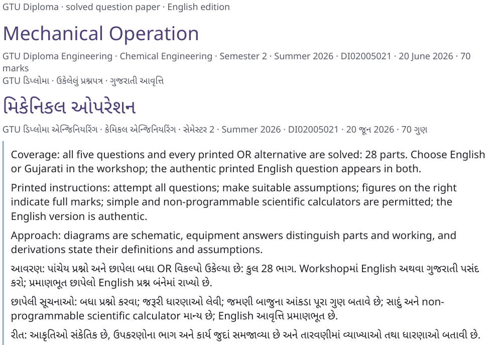
Question 1
Q1 · Particle properties, unit operations and conveying
Q.1 (a) · Define Bulk density and Mass mean diameter. · 3 marks
Bulk density ρb is the mass of a bed of particles divided by its total bulk volume, including the void spaces between particles.
It depends on packing and is normally lower than the true particle density.
Mass mean diameter is the mean particle diameter weighted by the mass in each size class:
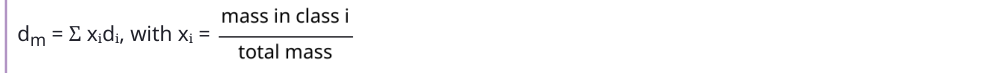
For equal masses of 1 and 3 mm particles, dm = 2 mm.
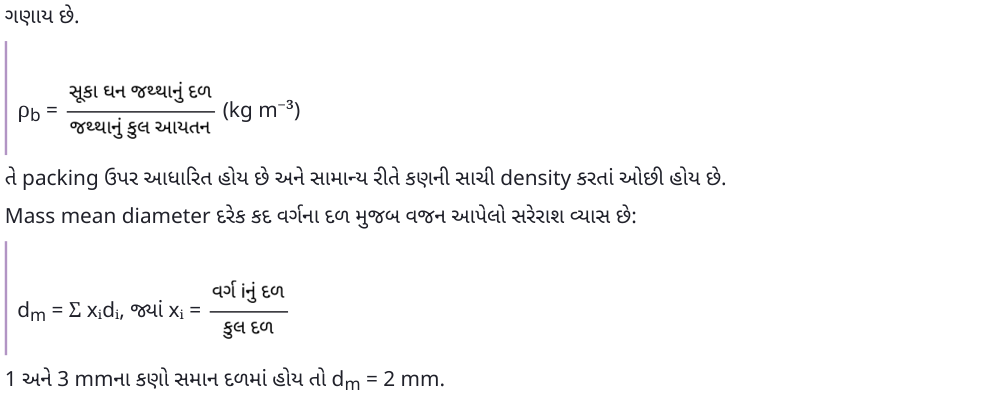
Q.1 (b) · Define Unit Operation and Unit Process with example. · 4 marks
Unit operation: a physical step in a process, normally without a chemical change in the substance. Examples: crushing limestone, filtration of a slurry, or distillation of a mixture.
Unit process: a manufacturing step involving a chemical reaction; chemical composition changes. Examples: oxidation, nitration and neutralisation.

The two can occur in the same plant: after a reaction (unit process), filtration (unit operation) can separate its solid product.
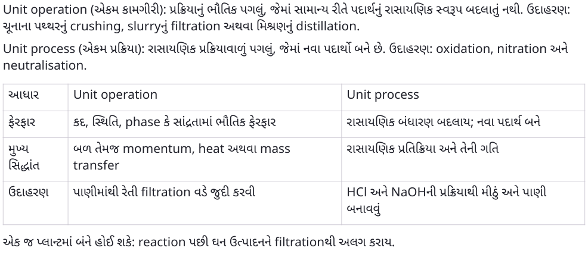
Q.1 (c) · Explain Belt conveyors with diagram. · 7 marks
Principle: an endless belt carries bulk solid on its moving upper surface. Friction at the powered head pulley drives the belt.
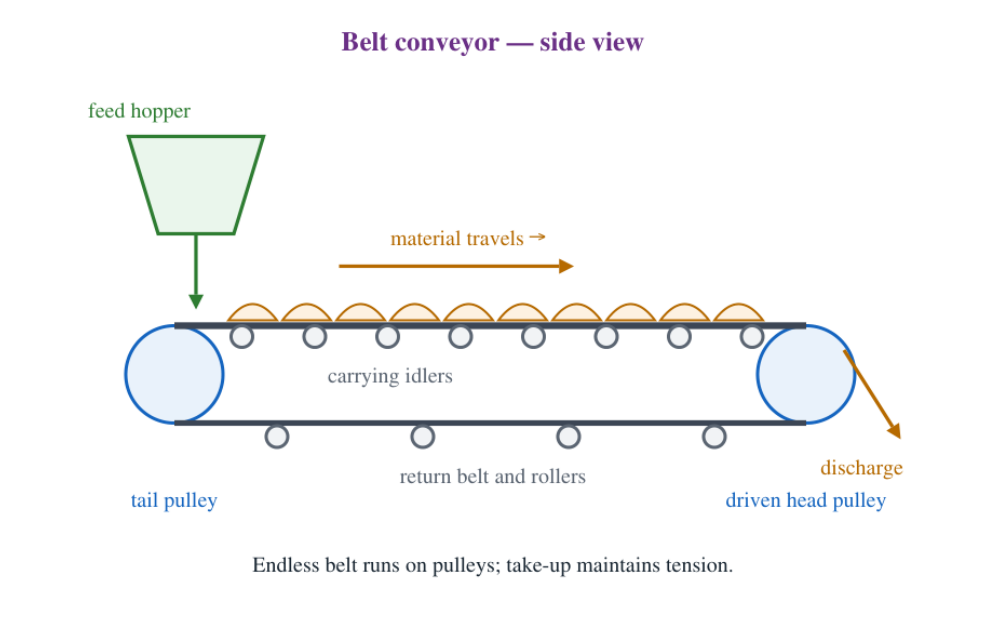
Belt conveyor, side view. Arrows show feed, belt travel and discharge.
Construction — part and purpose
![Q.1 (c): preserved source formula, table or diagram, page 3. Extracted text context (formula notation may be incomplete): Part Purpose Endless rubber/fabric or other suitable belt Carries material; its width and speed determine capacity Head and tail pulleys Head is driven; tail turns the belt back Carrying idlers and return rollers Support the loaded and empty belt; troughing idlers can form a trough Feed hopper, frame and take-up Feed evenly, support components and maintain belt tension Drive motor and discharge chute Supply movement and guide product at the head end](summer-2026.assets/0008.webp)
Working — step and reason
1. The motor turns the head pulley; friction pulls the tensioned endless belt around both pulleys.
2. The hopper feeds solid onto the supported upper run, which transports it continuously.
3. At the head pulley the belt turns back and material leaves by its momentum and gravity; the empty belt returns below.
Uses: coal, ore, sand and grains over moderate or long distances. Merit: continuous, high capacity with relatively low power. Limit: very steep inclines or hot/sticky material need a special belt or another conveyor.
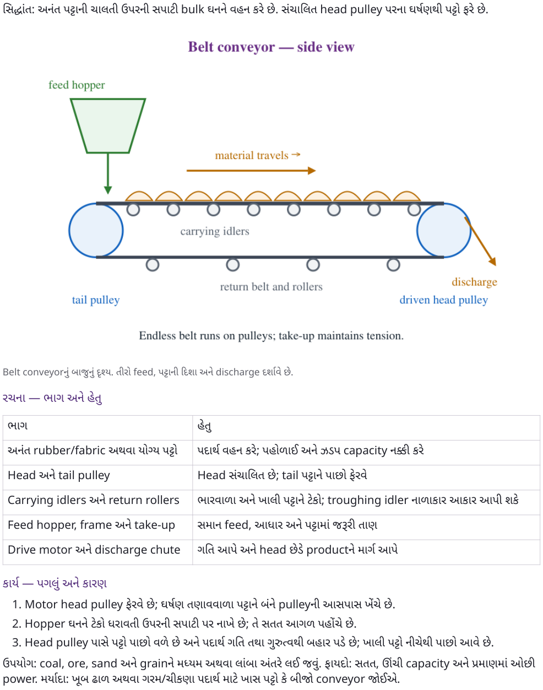
Q.1 (c) · Describe different types of conveying systems with diagram. · OR · 7 marks
A conveying system moves material between process locations. Select it according to material, direction, distance and required capacity.
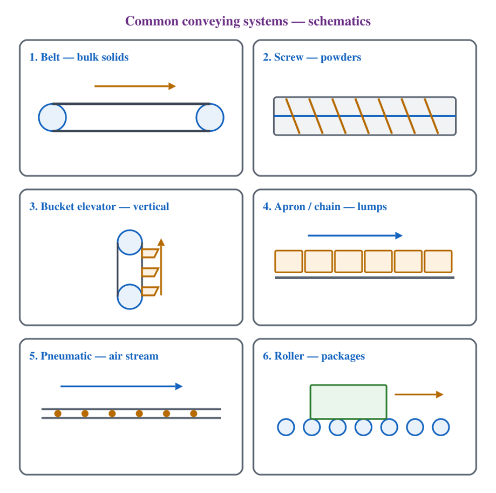
Six common conveying systems. Arrows show typical direction of travel.
System Construction and working Typical duty
Belt conveyor An endless belt passes over pulleys, supported on rollers; the top run carries the load.
Coal, ore or grain over long runs
Screw conveyor Helical flights rotate inside a trough and push material along the shaft.
Powders and granular solids over shorter distances
Bucket elevator Buckets on a moving belt or chain scoop/lift solids and discharge at the head.
Vertical lifting of grain or granules
Apron/chain conveyor
Linked pans or flights move on a driven chain. Heavy, hot or abrasive lumps
Pneumatic conveyor
A blower carries suspended particles through enclosed pipe to a receiver.
Fine powder, dust control and flexible routing
Roller conveyor Packages travel on powered or gravity-driven rollers.
Boxes, bags and pallets
A belt gives continuous high capacity, while a pneumatic line is enclosed but requires air power; no one type is best for every solid.
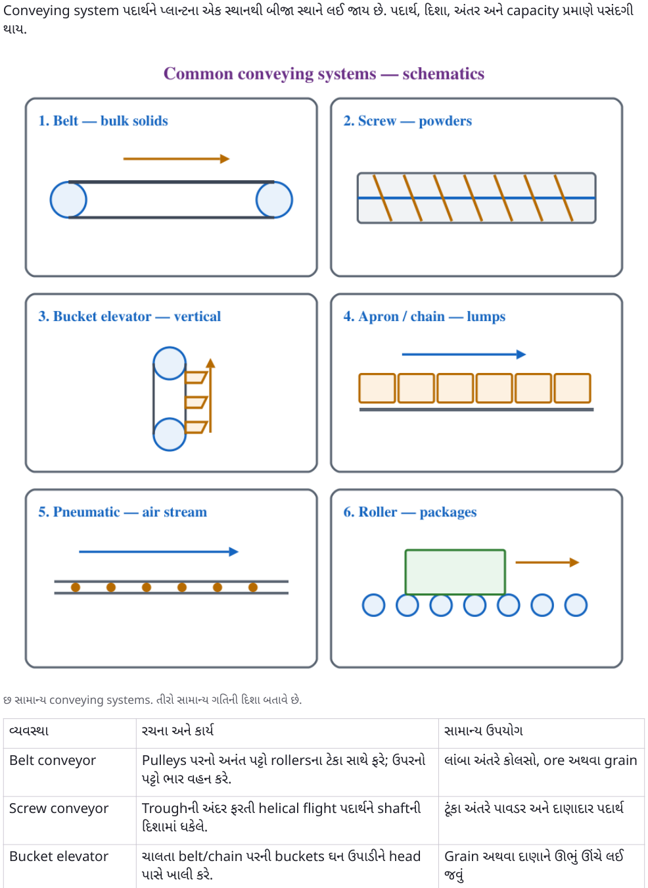
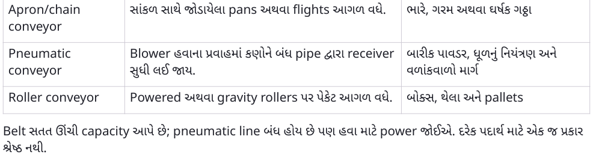
Question 2
Q2 · Screen analysis, grizzly and flotation
Q.2 (a) · List any three industrial applications of size reduction operation. · 3 marks
Any three industrial applications:
1. Cement: crushing limestone and grinding clinker produce a suitable fine feed and cement powder.
2. Minerals: crushing and grinding ore liberate valuable mineral from gangue before separation.
3. Pharmaceuticals/food: milling drugs or grains gives a more uniform powder and a larger surface for dissolution or processing.
Other examples include coal preparation for combustion and grinding pigments for paints.
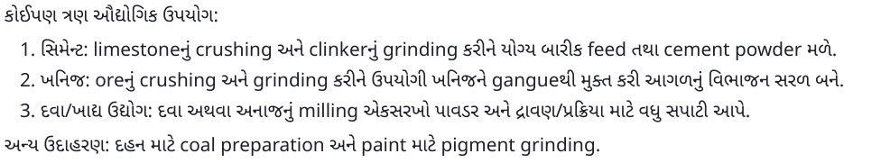
Q.2 (b) · Describe Cumulative screen analysis. · 4 marks
Cumulative screen analysis reports the total mass percentage retained above, or passing below, each sieve opening. It describes the particle-size distribution of the whole sample.
1. Arrange standard sieves with the largest opening at the top, smallest at the bottom, and a collecting pan below.
2. Weigh a representative dry sample, shake for a specified time, and weigh material retained on each sieve and in the pan.
down to get cumulative retained.
4. Cumulative passing at each sieve = 100 − cumulative retained. Plot cumulative % passing against sieve opening if a curve is needed.
Example: a 200 g sample gives:
Thus 60% by mass passes the 1 mm sieve. The pan has no sieve opening; it collects the remaining fines.
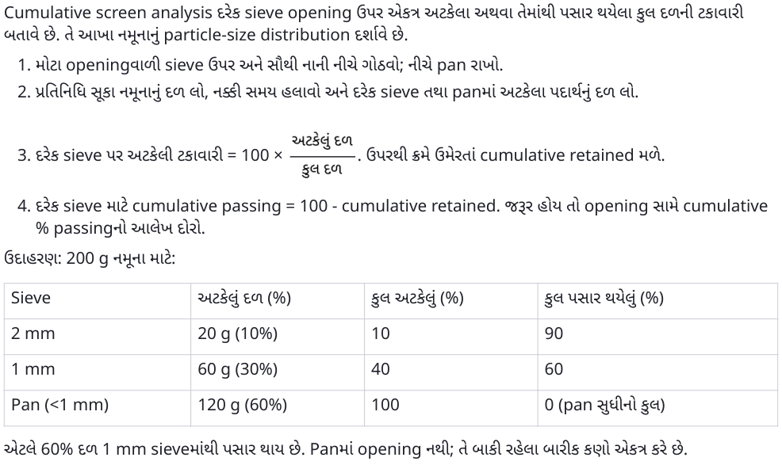
Q.2 (c) · Explain Construction, Working & Application of grizzlies. · 7 marks
Principle: size separation by a coarse bar screen. Particles smaller than the gaps pass through; larger lumps travel to the oversize end.
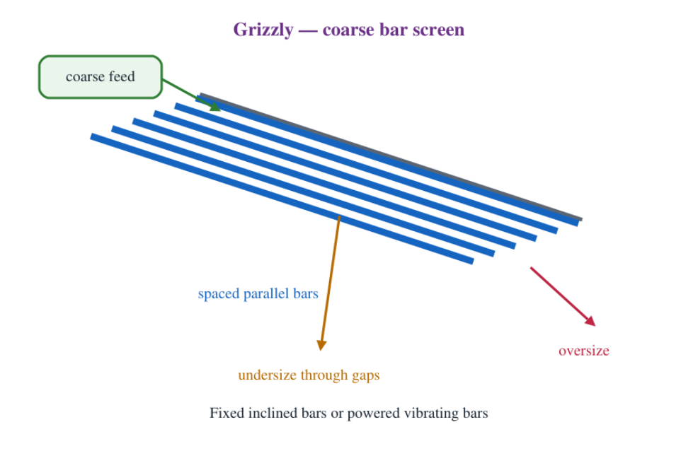
Grizzly with parallel inclined bars: undersize falls through; oversize leaves at the end.
Construction — part and purpose
![Q.2 (c): preserved source formula, table or diagram, page 9. Extracted text context (formula notation may be incomplete): Part Purpose Parallel steel bars, spaced apart Gaps provide the coarse separation opening; bars resist heavy impacts Inclined frame with feed end and discharge end Supports bars and lets lumps travel down the slope Hopper/chutes below and at the end Collect undersize and oversize separately Optional vibrator or moving bars Promote movement and reduce blockage in a powered grizzly](summer-2026.assets/0018.webp)
Working — step and reason
1. Feed coarse ore or rock onto the upper end of the bars.
2. Fines drop through the spaces under gravity; the coarse fraction moves down the bars to the lower end.
3. Collect the two streams separately. Adjust bar spacing and clean blockages to suit the required cut.
Applications: scalping fines from mine or quarry feed before primary crushing, and separating large lumps from smaller feed. Merit: fixed grizzlies are simple and handle large lumps; limit: wet sticky feed can blind the spaces.
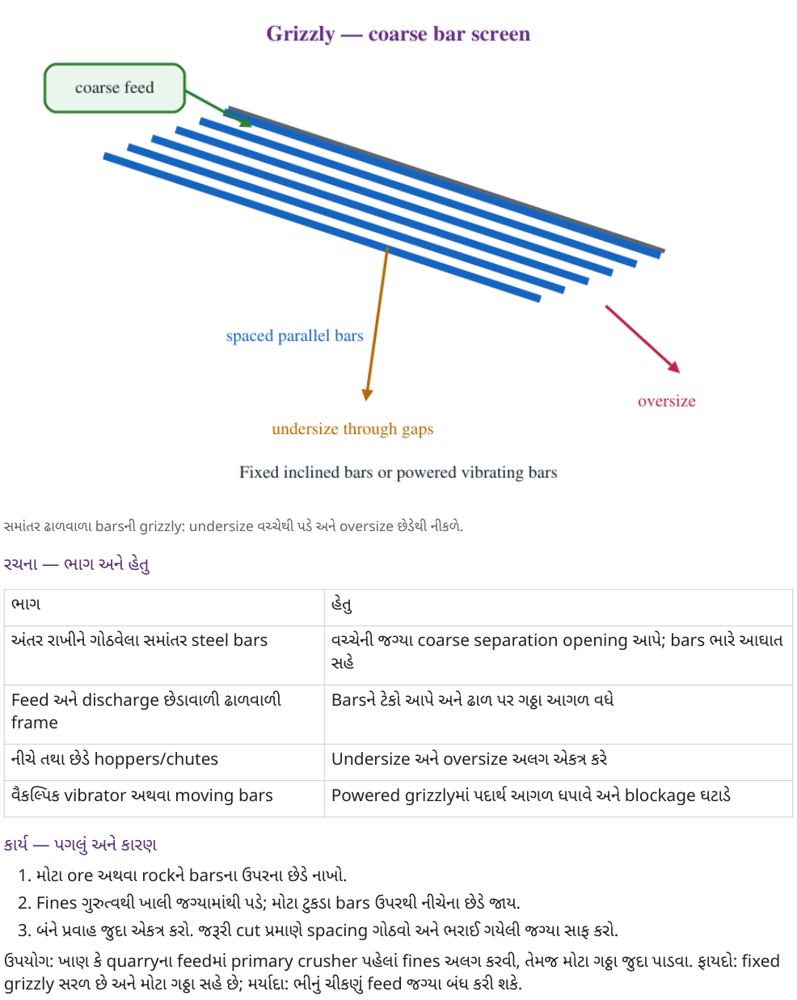
Q.2 (a) · List factors affecting selection of equipment for solid separation. · OR · 3 marks
Select solid-separation equipment after considering:
• Particle properties: size distribution, density difference, shape, abrasiveness and whether solids agglomerate.
• Fluid properties: gas or liquid, viscosity, density, temperature and corrosiveness.
• Feed: flow rate, solids concentration, moisture and variation in feed.
• Required performance: product purity, recovery, separation size and permitted final moisture.
• Practical constraints: continuous/batch operation, pressure drop, space, energy, capital, maintenance and safety.
For example, coarse dust may be removed by a cyclone; very fine dust may require a bag filter or electrostatic precipitator.
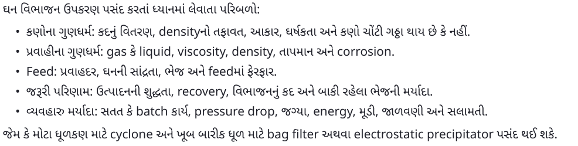
Q.2 (b) · Derive equation of angle of nip for roll crusher. · OR · 4 marks
Consider two equal rolls of radius R and diameter D, separated by a clear gap s. A spherical feed particle has radius r and diameter d. Let α be the angle between the horizontal centre line and the line joining a roll centre to the particle centre. The angle between the contact tangents is the nip angle θn = 2α.
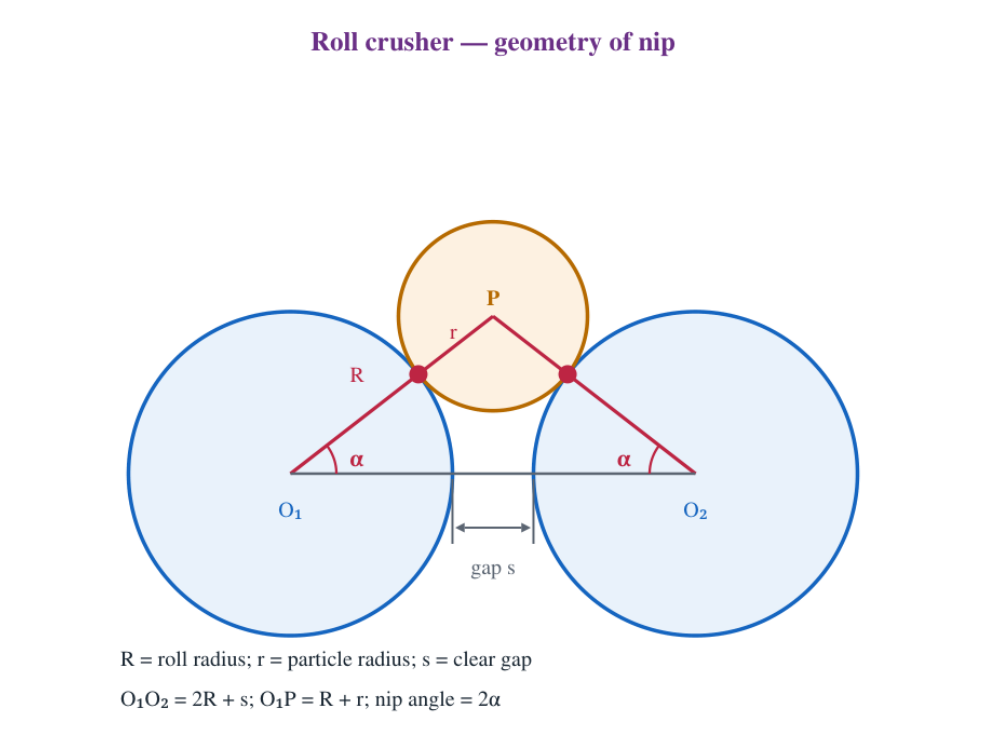
Centres, contact points, roll radius and gap. The drawing is schematic; the contact geometry determines α.
1. Geometry — At contact, centre-to-centre distance is R + r; its horizontal component is R plus
2. Forces — At each contact, normal force N has an upward component N sin α. Inward-rotating rolls exert downward friction F = μN with vertical component F cos α.
3. Condition to grip — Neglect particle weight in this limiting friction condition. For the downward friction to overcome the upward normal components, 2F cos α ≥ 2N sin α; hence μ ≥ tan α.
4. Maximum angle — At limiting grip, α = tan⁻¹ μ. The maximum angle of nip is therefore:
θn,max = 2 tan⁻¹ μ
The geometry equation is valid for a particle contacting both equal rolls (d ≥ s); it must also satisfy the friction condition for reliable nipping.
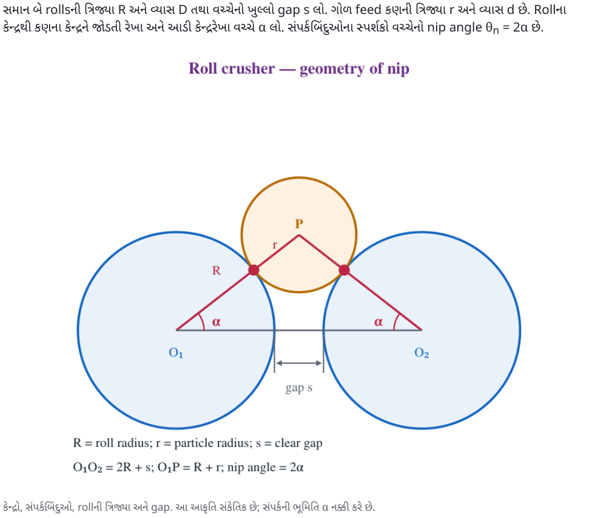
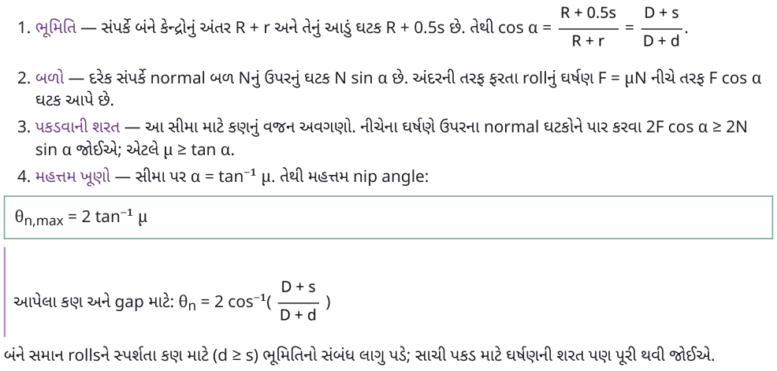
Q.2 (c) · Explain Principle, Working & Application of Froth flotation cell. · OR · 7 marks
Principle: separation depends on differences in surface wettability. A collector makes a chosen mineral hydrophobic, so it attaches to air bubbles; wetted gangue remains mainly in the slurry.
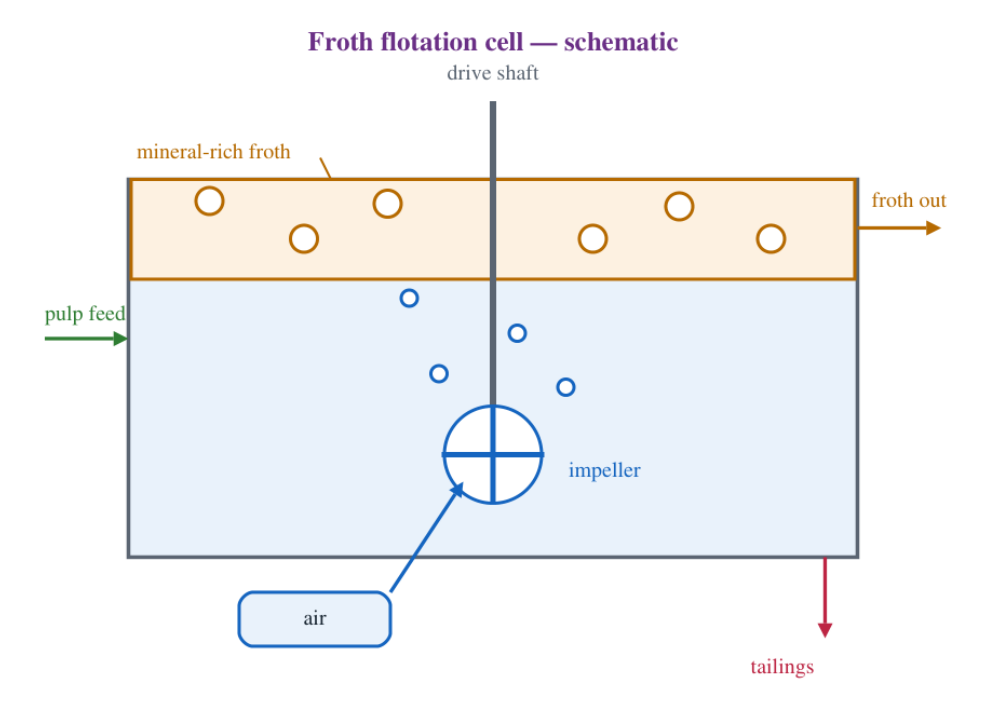
Flotation cell: pulp feed, agitator, air, froth overflow and tailings.
Construction — part and purpose
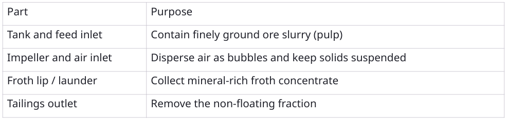
Working — step and reason
1. Condition ground ore slurry with a suitable collector and frother; modifiers may control which mineral floats.
2. Agitate and introduce air. Bubbles collide with particles and hydrophobic mineral attaches.
3. Mineral-bearing bubbles rise and form a stable froth; skim or overflow it as concentrate.
4. The more readily wetted gangue stays in the pulp and leaves as tailings.
Applications: concentration of sulphide ores such as copper, lead and zinc, and cleaning certain coal or industrial mineral feeds. Limitation: reagent choice, suitable particle size and water chemistry are important.
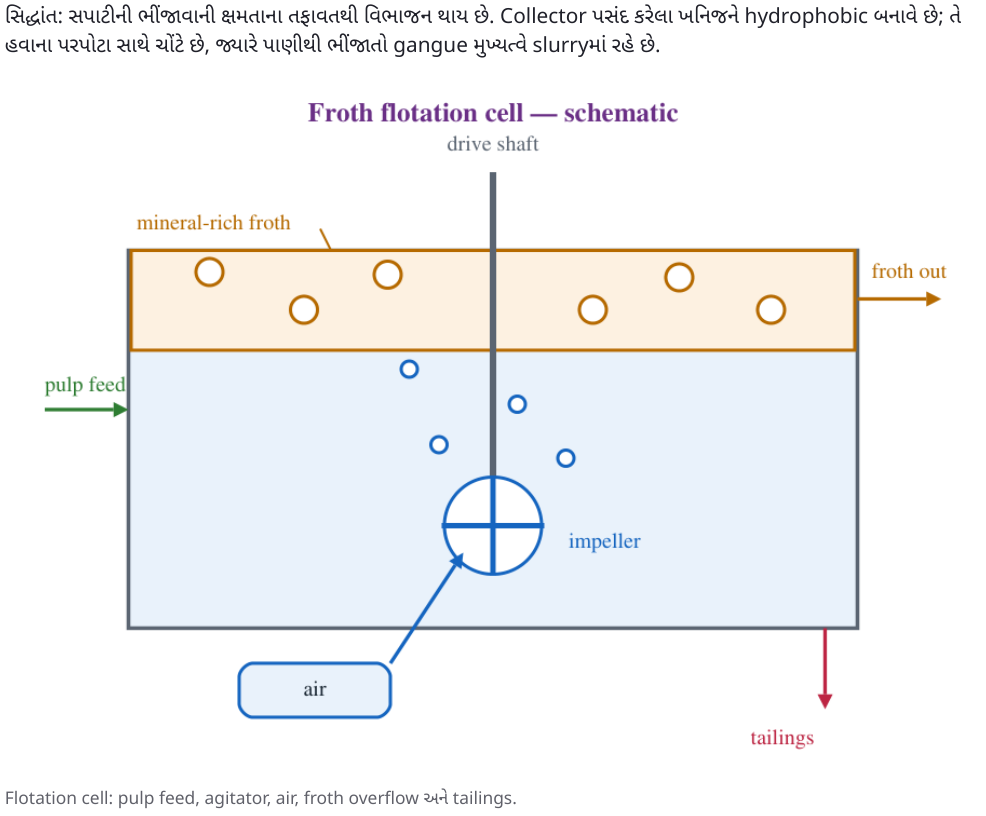
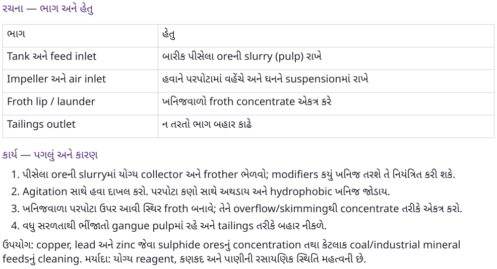
Question 3
Q3 · Size reduction, laws and crushers
Q.3 (a) · List factors for selection of size reduction equipment. · 3 marks
Factors for selecting a crusher or grinder:
• Feed size and required product size or size distribution.
• Hardness, brittleness, toughness and abrasiveness of the feed.
• Moisture, stickiness and heat sensitivity; risk of clogging or decomposition.
• Required capacity, continuous or batch duty, and available power.
• Acceptable contamination, wear, capital and maintenance costs, and safety.
Example: use a jaw crusher for large hard lumps, but a cutter for tough fibrous feed.
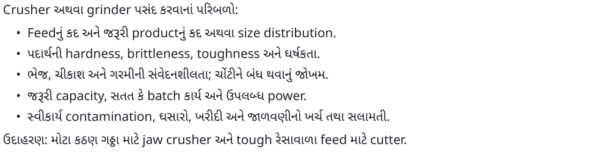
Q.3 (b) · Derive Rittinger’s law for size reduction operation. · 4 marks
Assumption: the energy per unit mass required for size reduction is proportional to the new surface
area formed. Assume geometrically similar particles and constant density.
1. Surface per unit mass — For particles of representative size D, surface ∝ D² and mass ∝ D³, so
3. Integrate — Integrate from feed size Df to smaller product size Dp: E = −KR ∫DᶠDᵖ D⁻² dD.
E is energy per unit mass and KR is the Rittinger constant for the chosen units. The positive result follows because Dp < Df; this is an empirical approximation, particularly useful for fine grinding.
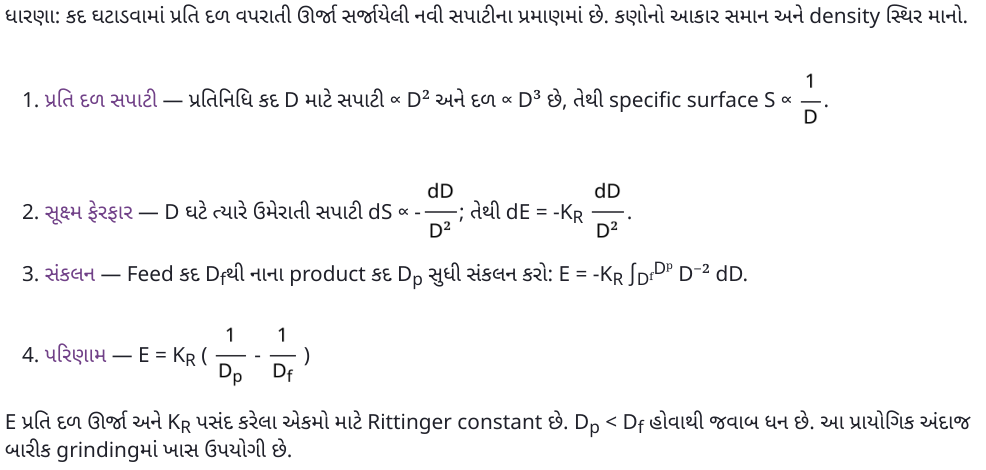
Q.3 (c) · Explain the principal construction and working of Hammer mill. · 7 marks
Principle: high-speed swinging hammers break particles primarily by impact; impact against the casing and some attrition also contribute.
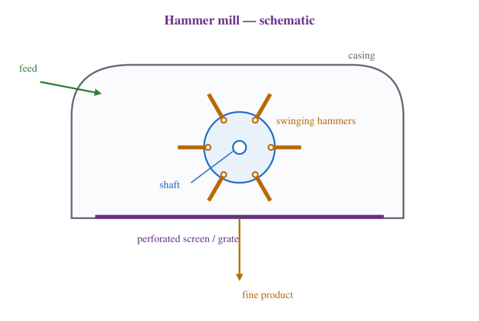
Hammer mill: feed, casing, hinged hammers, rotor, screen and product outlet.
Construction — part and purpose

Working — step and reason
1. Feed enters the chamber while the rotor turns.
2. Hammers strike the particles; repeated blows and collisions break brittle material.
3. Particles too large for the screen remain for further impacts; fine particles pass through the holes and discharge.
Applications: grinding coal, spices, grain and other dry brittle materials. Merit: compact and relatively high capacity; limitations: screen blinding with sticky feed and wear with abrasive feed.


Q.3 (a) · Draw neat diagram of Jaw crusher. · OR · 3 marks
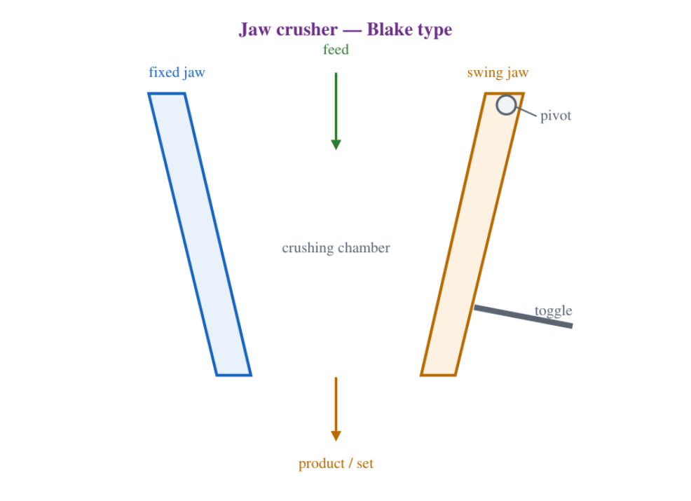
Blake jaw crusher: fixed jaw, swing jaw, pivot, toggle, feed and discharge set.
Large lumps enter the wide top opening. The motor-driven mechanism moves the swing jaw towards the fixed jaw to crush by compression; during the return stroke broken material descends and exits through the narrow bottom set.
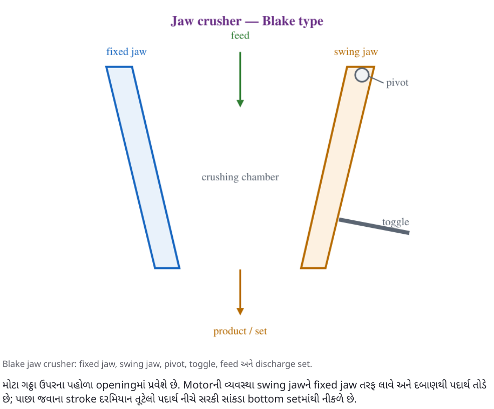
Q.3 (b) · Compare between open circuit and close circuit grinding. · OR · 4 marks
![Q.3 (b) OR: preserved source formula, table or diagram, page 20. Extracted text context (formula notation may be incomplete): Basis Open-circuit grinding Closed-circuit grinding Flow Feed → mill → product, generally one pass Feed → mill → classifier; oversize returns to mill Size control Less precise; some coarse and excess fine particles may remain Classifier controls top size; fines leave as product Energy and equipment Simpler circuit and lower equipment cost; possible overgrinding More equipment and circulating load, but avoids prolonged grinding of finished fines Use Where a broad size range is acceptable Where a narrow product size and controlled fineness are needed](summer-2026.assets/0042.webp)
The classifier may be a screen or hydrocyclone, chosen for the material and operating conditions.
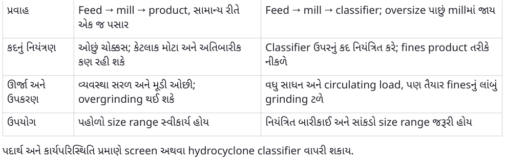
Q.3 (c) · Derive equation of critical speed for Ball Mill. · OR · 7 marks
The critical speed is the speed at which a grinding ball just remains against the mill wall at the top instead of falling. Above this ideal limiting speed the charge tends to centrifuge, greatly reducing impact grinding.
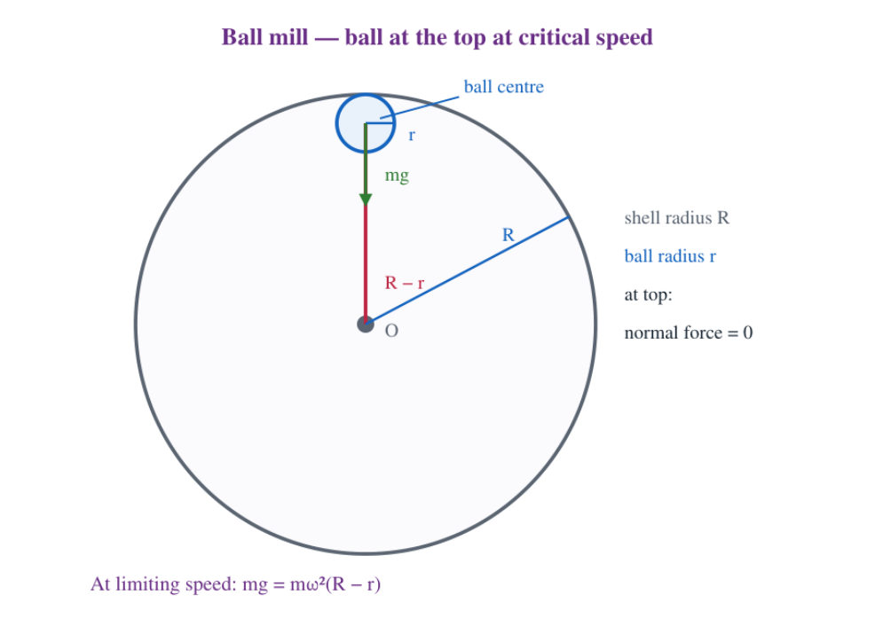
Ball at the top: its centre travels at radius R − r. At the limit the wall normal reaction is zero.
Symbols: mill inside radius R and diameter D; ball radius r and diameter d; g = gravitational acceleration; ω = angular speed in rad s⁻¹.
Assumptions: ball moves with the shell without slipping, air resistance neglected, and contact is just lost at the top.
1. Forces at the top — The necessary inward (centripetal) force is mω²(R − r). At limiting contact the normal reaction is zero; gravity mg alone supplies it.


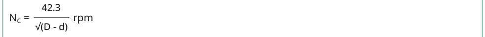
A practical mill is operated below the critical speed so the balls fall or cascade and create impact and attrition.
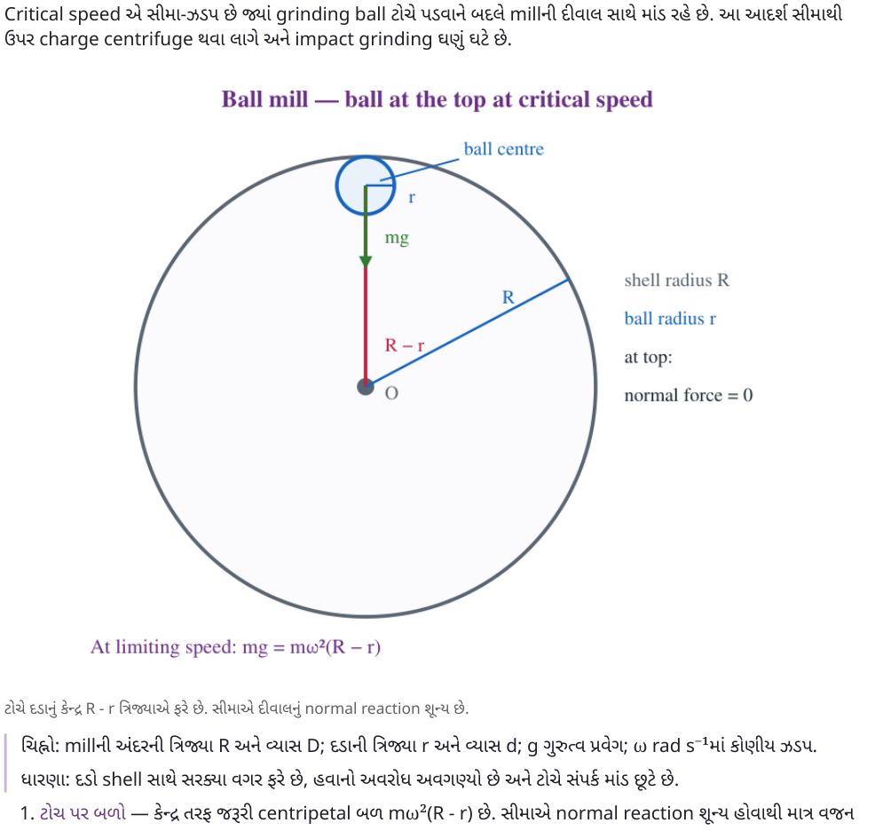
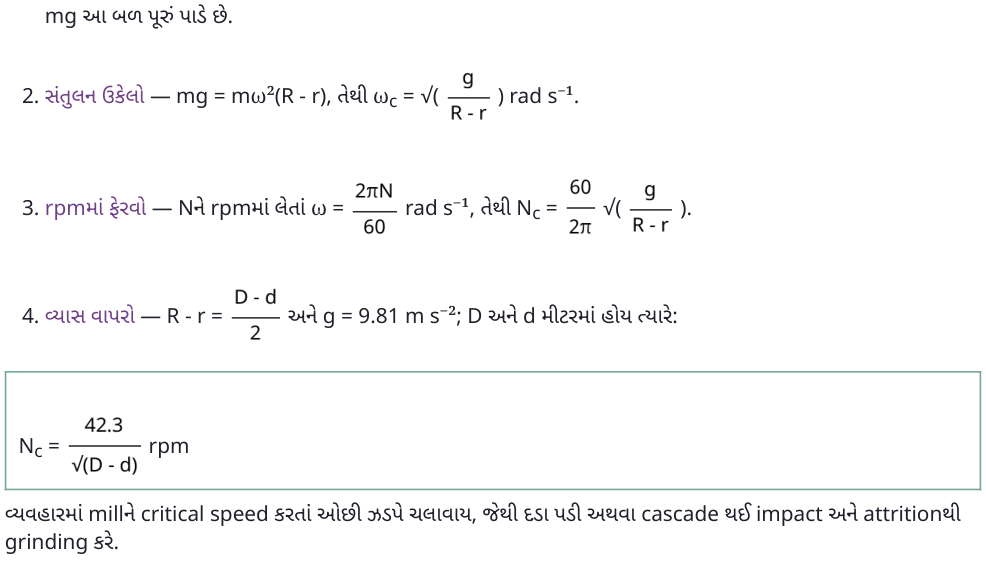
Question 4
Q4 · Settling, cyclone and filtration
Q.4 (a) · Define Hindered settling and Free settling. · 3 marks
Free settling: a particle settles in a dilute suspension essentially without interference from neighbouring particles or walls; its motion depends mainly on its own size, density and the fluid properties.
Hindered settling: in a concentrated suspension, neighbouring particles and the upward displaced fluid interfere with one another; the settling velocity is usually lower than for the same particle in free settling.
Example: sparse sand grains in water approximately settle freely; a dense sludge blanket settles hindered.
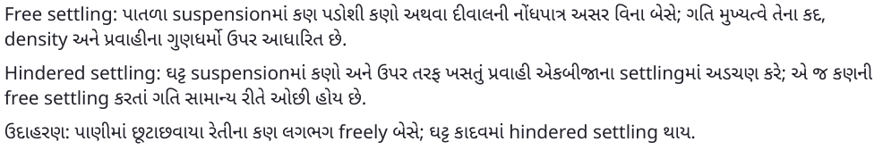
Q.4 (b) · Sketch neat diagram of Cyclone Separator. · 4 marks
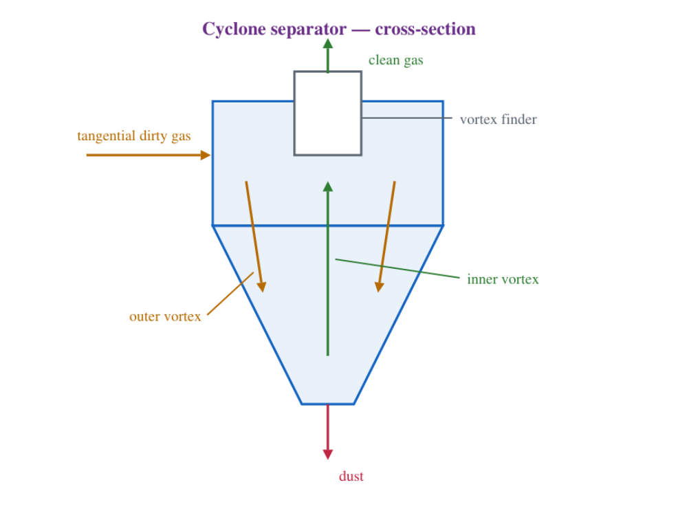
Cyclone separator: tangential gas inlet, cylindrical body, cone, vortex finder and dust outlet.
Dust-laden gas enters tangentially and spirals down; inertia carries particles towards the wall and into the dust outlet. The inner vortex carries cleaner gas up through the vortex finder.
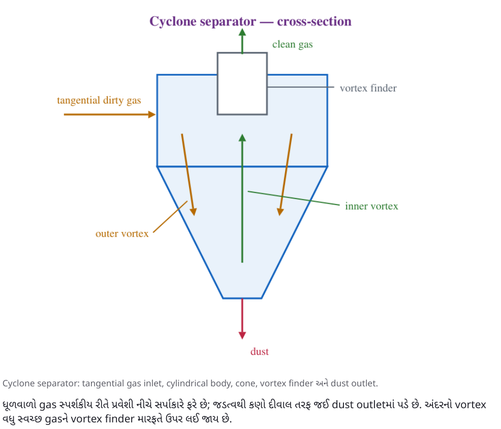
Q.4 (c) · Explain principle, working and application of Gravity Thickener. · 7 marks
Principle: gravity sedimentation separates suspended solid from liquid because the particles are denser than the liquid. The underflow is concentrated while clarified liquid overflows.
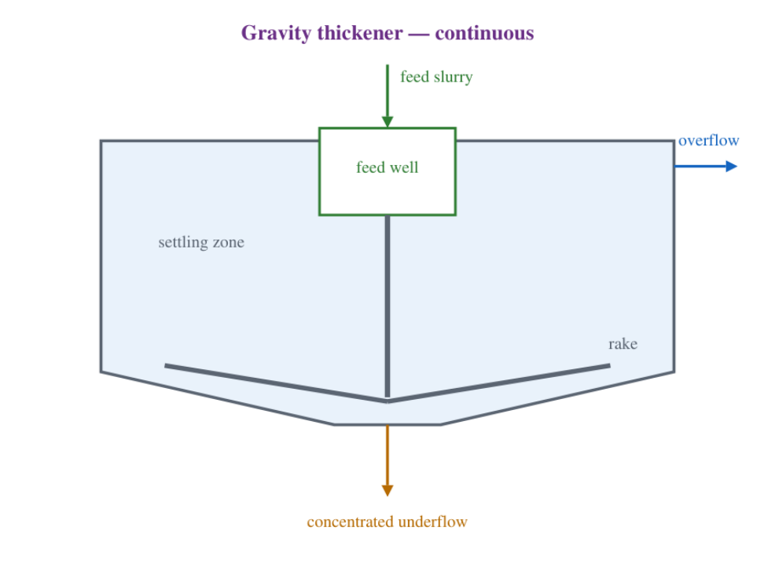
Continuous gravity thickener: central feed well, tank, rake, overflow and underflow.
Construction — part and purpose
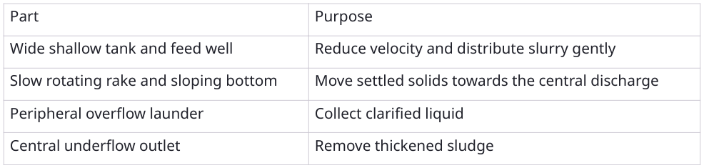
Working — step and reason
1. Introduce dilute slurry into the central feed well, dissipating its momentum.
2. Solids settle under gravity and accumulate in the lower zones; clarified liquid rises relatively to the settling solids and flows to the overflow.
3. Slow rakes move the deposited solids toward the centre and assist consolidation; pump out concentrated underflow.
4. Where suitable, add a flocculant to help fine particles form faster-settling aggregates.
Applications: concentration of mineral slurries, clarification/recycle of process water, and thickening of wastewater sludge. Limit: very fine or slow-settling particles may require a large tank or conditioning.
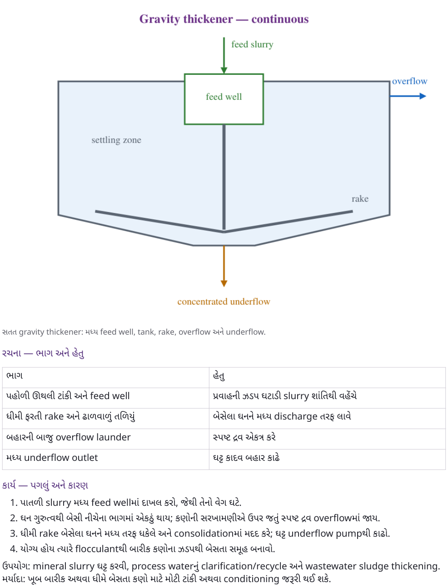
Q.4 (a) · Discuss Constant Pressure filtration. · OR · 3 marks
Constant-pressure filtration keeps the pressure drop ΔP across a filter constant while slurry is filtered. Liquid flows through the medium; solids form a cake on it.
1. Apply the set pressure using a pressure vessel or regulated pump.
2. As filtration continues, cake thickness and resistance increase.
3. Since ΔP is fixed, filtrate flow rate decreases with time; stop when the batch or limiting rate is reached.
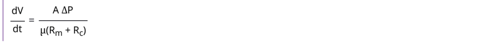
Here A is filter area, μ liquid viscosity, Rm medium resistance and Rc cake resistance. For a simple incompressible cake Rc increases with volume V.
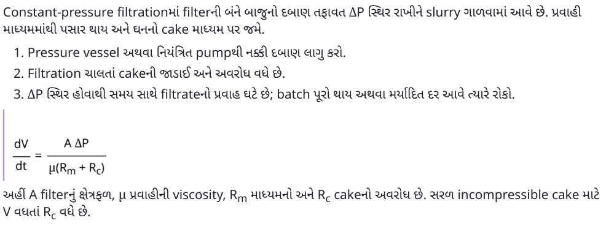
Q.4 (b) · Define filter Aid & list its application. · OR · 4 marks
A filter aid is a porous, inert solid added to a slurry or deposited as a precoat on the cloth. It forms an open, permeable cake that traps fine particles without rapidly blinding the medium.
Examples: diatomaceous earth (kieselguhr), perlite and cellulose fibres.
1. Precoat: deposit a thin layer on the medium before filtration; it protects the cloth and captures fine solids.
2. Body feed: mix a controlled amount into the slurry so the cake stays porous.
Applications: clarification of sugar syrup, edible oils, beverages, chemicals and other fine or gelatinous suspensions. Use a compatible aid; it mixes with the cake and may make recovery of pure solids difficult.

Q.4 (c) · Explain principle, working and application of Filter Press. · OR · 7 marks
Principle: pressure forces slurry through a porous filter cloth. The cloth retains solids as cake, while filtrate drains through plate channels.
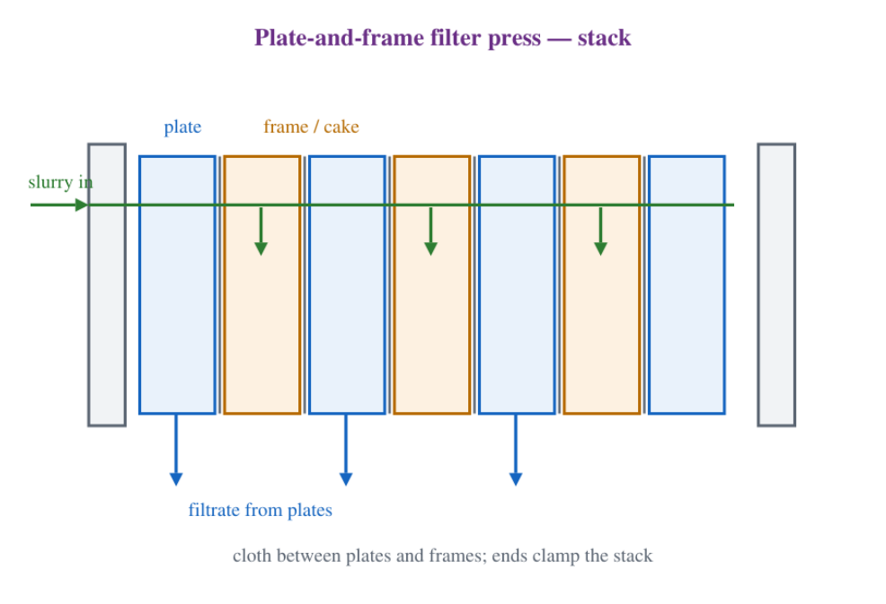
Alternating plates and frames in a filter press. Blue arrows show filtrate outlets; cloth lies between the faces.
Construction — part and purpose
![Q.4 (c) OR: preserved source formula, table or diagram, page 29. Extracted text context (formula notation may be incomplete): Part Purpose Alternating plates and hollow frames Frames provide cake chambers; grooved plates support cloth and drain filtrate Filter cloth on each plate face Retains solid while allowing liquid to pass Feed channel and slurry pump Supply slurry under pressure to the frame chambers Head, follower and screw/ hydraulic clamp Hold the stack tightly to limit leakage Filtrate outlets and optional wash channel Collect filtrate; wash retained cake if required](summer-2026.assets/0063.webp)
Working — step and reason
1. Close the stack and pump slurry into the frames.
2. Pressure drives liquid through the cloth and plate grooves to the outlets; solids remain in the chambers as cake.
3. Continue until the chambers fill or the filtration rate becomes too low; optionally wash the cake.
4. Stop the pump, release pressure, open the press and remove cake; clean cloth and reassemble for the next batch.
Applications: clarification of liquids and recovery of solids in chemical, food and wastewater treatment. Advantage: large area and relatively dry cake; limitation: batch opening and cleaning require labour.
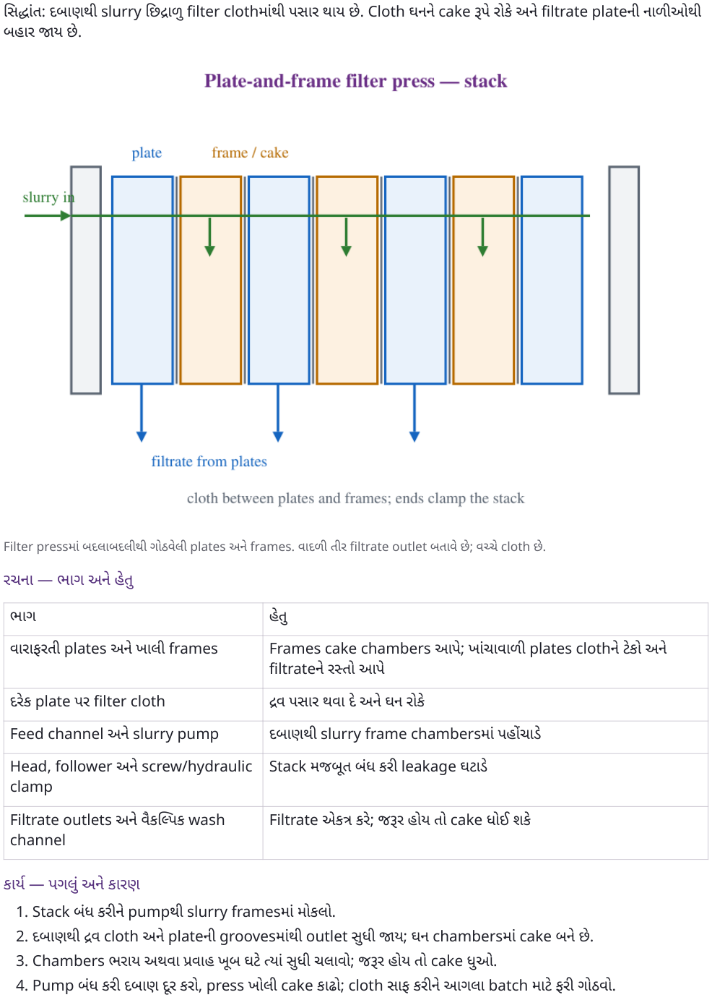
Question 5
Q5 · Agitation, filtration and mixing equipment
Q.5 (a) · Define agitation and mixing. · 3 marks
Agitation is the induced motion of a fluid, for example circulation produced by an impeller in a tank.
Mixing is the intermingling of two or more portions or components to reduce differences in composition or temperature.
Difference: agitation describes motion; mixing describes the resulting distribution. Agitation can promote mixing, but mere rotation of the whole liquid need not mix it well. Example: an impeller circulates water and distributes added salt.
Q.5 (b) · Draw neat labelled diagram of Rotary Drum Filter. · 4 marks
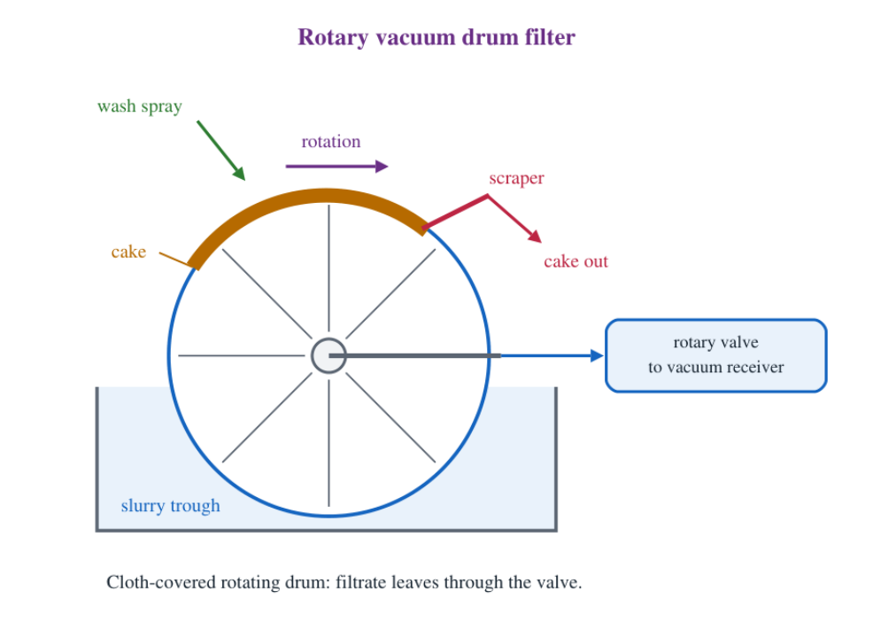
Rotary vacuum drum filter: cloth-covered drum, slurry trough, wash, scraper and rotary valve to vacuum receiver.
The partly submerged drum rotates. Vacuum draws filtrate through the cloth and internal sectors to the rotary valve; cake forms on the outside, may be washed and dried, and is removed by the scraper. The trough holds slurry; it is not the filtrate outlet.
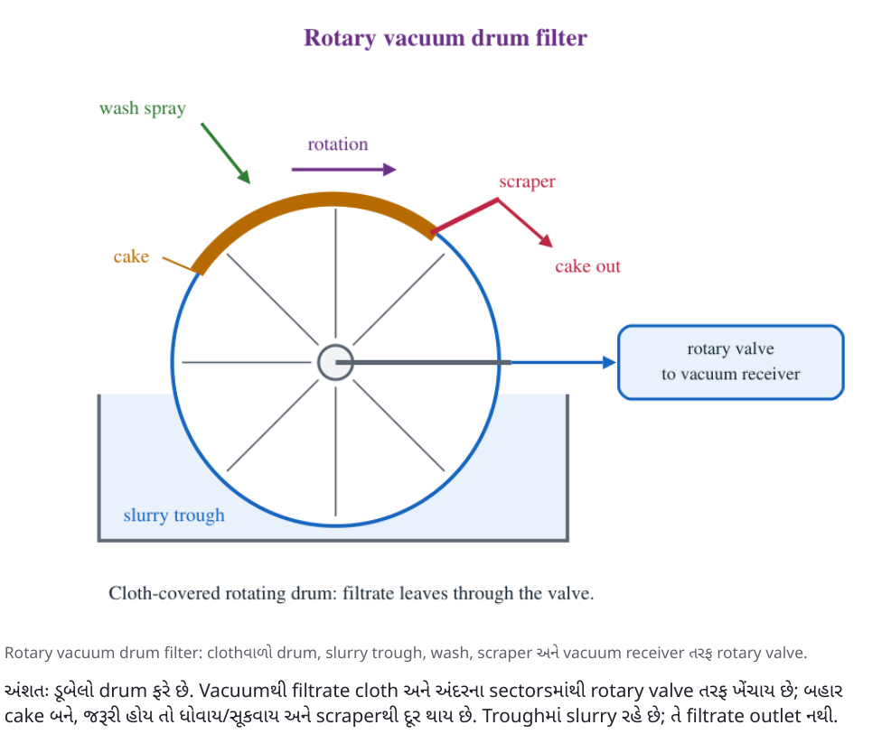
Q.5 (c) · Describe construction, working and application of Agitated vessel. · 7 marks
Principle: a rotating impeller transfers mechanical energy to the liquid, generating circulation and shear; this distributes added material, heat or suspended solids through the vessel.
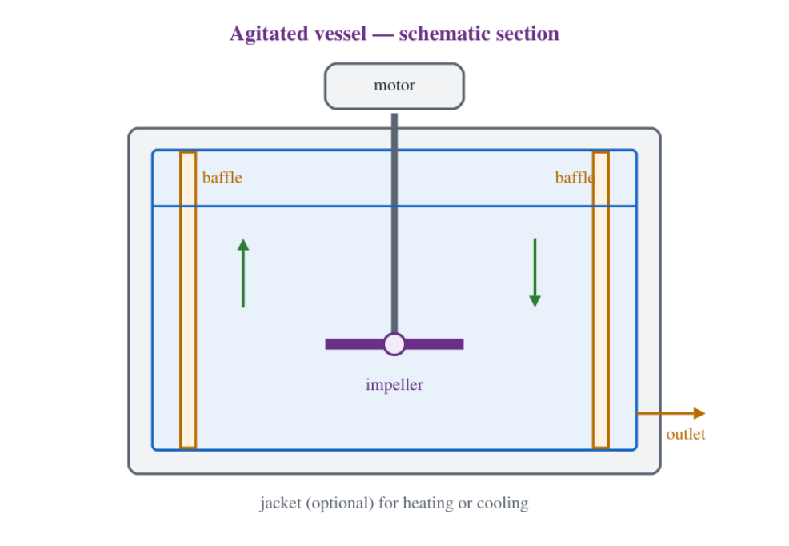
Agitated vessel section: motor, shaft, impeller, baffles, jacket and outlet.
Construction — part and purpose

Working — step and reason
1. Charge the vessel to the required level and start the motor.
2. The impeller pumps liquid axially or radially depending on its design, creating circulation loops.
3. Baffles interrupt bulk rotation so fluid from different regions is exchanged and additions disperse.
4. Continue for the required mixing time; heat or cool through a jacket if needed and withdraw the product.
Applications: dissolving chemicals, mixing miscible liquids, suspending solids, heat transfer and chemical-reactor agitation. Select impeller and speed for viscosity and duty; viscous pastes may need an anchor or helical ribbon.
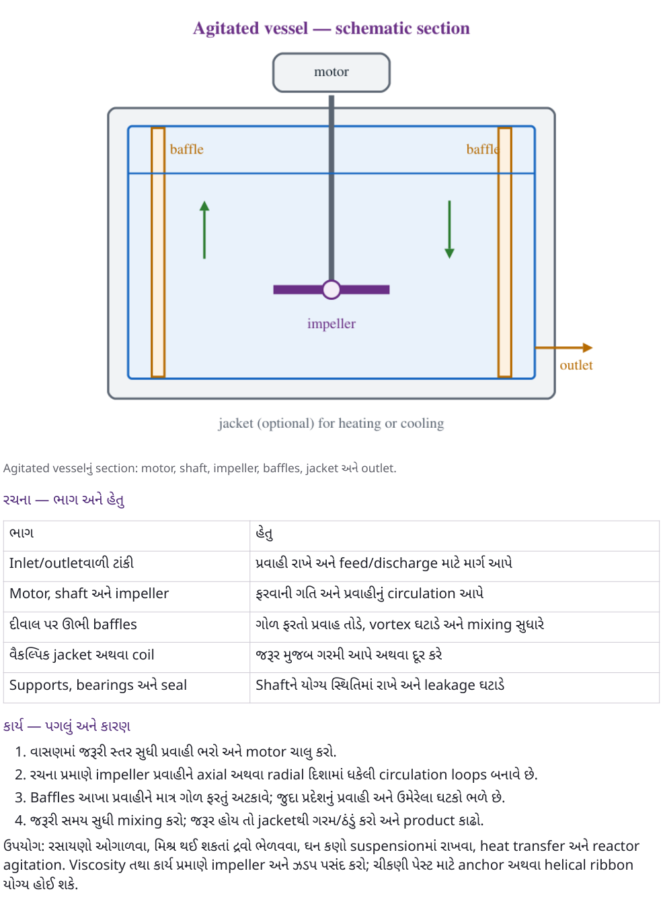
Q.5 (a) · How to prevent Vortex formation in Agitated Vessel. · OR · 3 marks
A vortex is the funnel-like depression at the liquid surface when liquid rotates with the impeller; it can entrain air and reduce effective mixing.
• Fit vertical baffles on the vessel wall to interrupt circular motion.
• Mount the shaft off-centre to break symmetric circulation.
• Use an inclined or side-entry impeller instead of a centrally vertical shaft.
• Adjust impeller speed and liquid depth where suitable; excessive speed can promote a vortex.
Baffles are the usual method in larger stirred vessels.
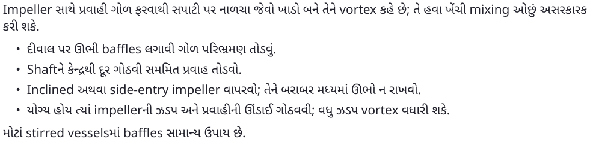
Q.5 (b) · List Factors affecting on agitation and Mixing. · OR · 4 marks
Factors affecting agitation and mixing include:
• Liquid properties: viscosity, density, miscibility and solids content.
• Impeller: type, diameter, blade pitch, speed and position relative to the bottom.
• Vessel: diameter, liquid depth, bottom shape and the number/width of baffles.
• Operating duty: degree of mixing, mixing time, temperature, number of phases and power input.
For example, more viscous liquid may need a larger, slow-speed anchor or ribbon impeller instead of a small propeller.
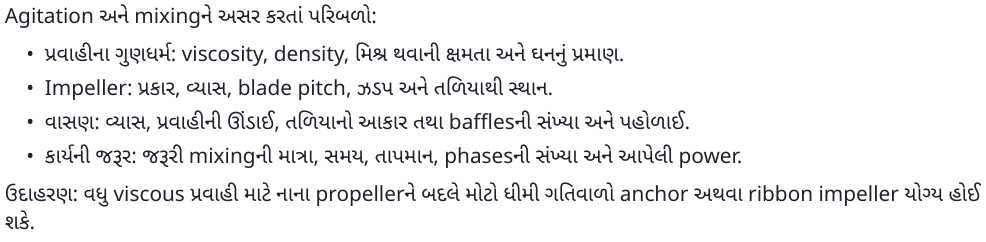
Q.5 (c) · Describe construction, working and application of Muller mixer. · OR · 7 marks
Principle: heavy wheels roll over material in a pan, combining crushing and kneading with mixing. Ploughs continually return material beneath the wheels.
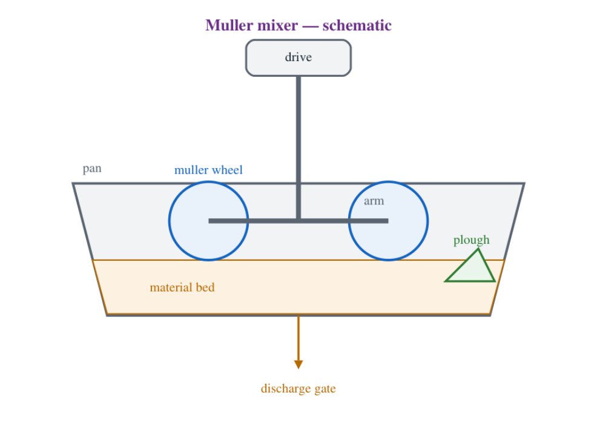
Muller mixer: pan, heavy muller wheels, driven shaft and arms, plough and discharge.
Construction — part and purpose

Working — step and reason
1. Load dry solids or a damp paste into the pan and start the drive.
2. The wheels roll across the bed, crushing agglomerates and kneading the material.
3. Ploughs turn and redirect material beneath the wheels for more uniform mixing.
4. After the required time, open the gate and discharge the mix.
Applications: foundry sand preparation, clay and ceramic bodies, refractory mixes, pigments and damp pastes. Merit: strong kneading and mixing; limit: heavy drive and possible wear with abrasive feed.
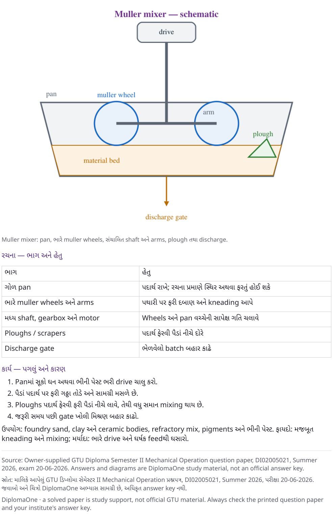